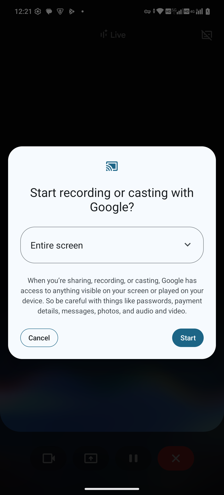
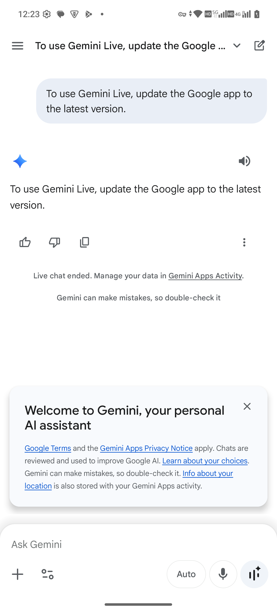
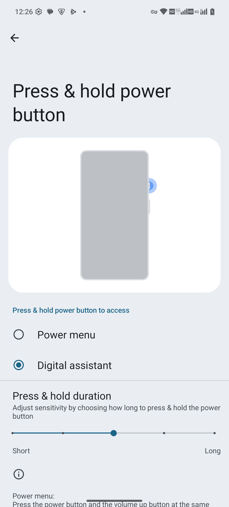

MAGNE、AI 與 Web3 / Gemini
Gemini：側鍵直達、即時螢幕共享與網頁摘要
在公開網頁上喚起 Gemini，使用 Live 共享螢幕，或取得可閱讀的網頁摘要。
本章僅使用 MAG1WW60-1 證據。操作參考與實際錄製的動作分開說明。
長按側邊電源鍵 → Gemini → Live / Summarize page
MAG1WW60-1 實際結果
本次已進入 Gemini Live 及 Android 螢幕共享確認流程，並核對共享啟動及停止。結束後的 Live 會話文字顯示「To use Gemini Live, update the Google app to the latest version.」。僅憑此文字不能確認原因或斷定必須更新。未取得正常 Live 回答或網頁摘要，不把這段錄影當作助理任務成功完成。
開始前
- Google／Gemini 助理的可用性取決於已安裝 App、帳號、地區及網路。本次使用 Google App 提供的助理。
- 使用公開網頁，共享前確認畫面沒有訊息、帳號詳情或敏感通知。本次錄影展示 MAGNE.AI 公開網頁。
- 檢查 Settings → System → Gestures → Press & hold power button → Digital assistant。本機原已選用此設定，本次未變更。
本次錄製順序
- 在 Chrome 顯示 MAGNE.AI 公開網頁。
- 喚起助理、開啟 Gemini Live、選擇螢幕共享，核對 Entire screen 後點選 Start。錄影使用 ADB 助理按鍵輸入，未測實體電源側鍵時序。
- 滑動公開頁面，返回 Live 並結束會話，確認螢幕共享已停止。
已核對選項
- Digital assistant：本機已選用的長按電源鍵功能。
- Open Gemini Live 與螢幕共享控制：開啟 Live 介面及 Android 共享確認；確認視窗顯示 Entire screen 與 Start。
- Close the conversation：結束 Live；開啟私人內容前確認共享已停止。
MAG1WW60-1 實際核對範圍
MAG1WW60-1 的 Android Entire screen 共享確認；演示使用 MAGNE.AI 公開網頁。 結束後的 Live 會話文字顯示「To use Gemini Live, update the Google app to the latest version.」。僅憑此文字無法診斷 App 版本或韌體故障；本次未演示有效的網頁回答。 MAG1WW60-1：ADB 助理按鍵喚起及公開頁面螢幕共享，已核對共享啟動及停止。此無音訊錄影展示共享控制流程，未演示成功的網頁回答；未測實體側鍵時序。 核對電源側鍵指派與長按時間選項；未變更設定，未測實體按鍵時序
恢復狀態
螢幕共享已結束；臨時麥克風採集限制已恢復原設定。獨立 Gemini 套件維持原先停用狀態，本次助理由 Google App 提供。
疑難排解
- 若出現電源選單，檢查長按功能及預設助理。ADB 錄影並未驗證實體按鍵操作。
- 本次介面顯示更新 Google App 的提示；再次測試前應核對 App 版本及服務可用性，不能僅憑此提示判定韌體故障。
- 本次無音訊演示暫時限制麥克風採集，結束後已恢復；未測試語音互動。
測試邊界
僅適用本次 MAG1WW60-1 裝置的 Google／Gemini 狀態；服務可用性也取決於 App 版本、帳號與網路。未驗證語音品質、離線推論、連接個人服務或成功摘要。
MAG1WW60-1 截圖與錄影 · 2026-10-16
本頁素材僅確認此開發版本中實際呈現的畫面及操作，不代表所有設定、外接配件或完整功能均已通過測試。Android 觸點標記對應 ADB 注入操作，保留原生座標欄，未遮罩應用圖示。


MAG1WW60-1 · 2026-10-16 · 英文原始截圖
MAG1WW60-1 的 Android Entire screen 共享確認；演示使用 MAGNE.AI 公開網頁。


MAG1WW60-1 · 2026-10-16 · 英文原始截圖
結束後的 Live 會話文字顯示「To use Gemini Live, update the Google app to the latest version.」。僅憑此文字無法診斷 App 版本或韌體故障；本次未演示有效的網頁回答。

MAG1WW60-1 · 2026-10-16 · 英文原始截圖
MAG1WW60-1：ADB 助理按鍵喚起及公開頁面螢幕共享，已核對共享啟動及停止。此無音訊錄影展示共享控制流程，未演示成功的網頁回答；未測實體側鍵時序。
MAG1WW60-1 · 2026-10-16 · MAG1WW60-1：ADB 助理按鍵喚起及公開頁面螢幕共享，已核對共享啟動及停止。此無音訊錄影展示共享控制流程，未演示成功的網頁回答；未測實體側鍵時序。


MAG1WW60-1 · 2026-10-16 · 英文原始截圖
核對電源側鍵指派與長按時間選項；未變更設定，未測實體按鍵時序
本版素材狀態
請見上方具日期的 MAG1WW60-1 截圖與錄影。